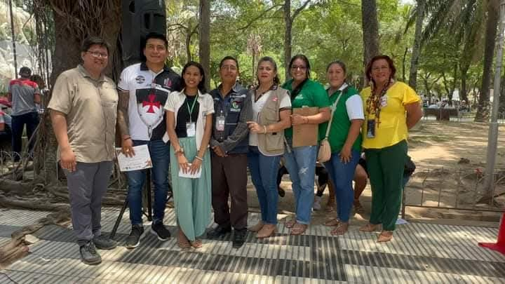
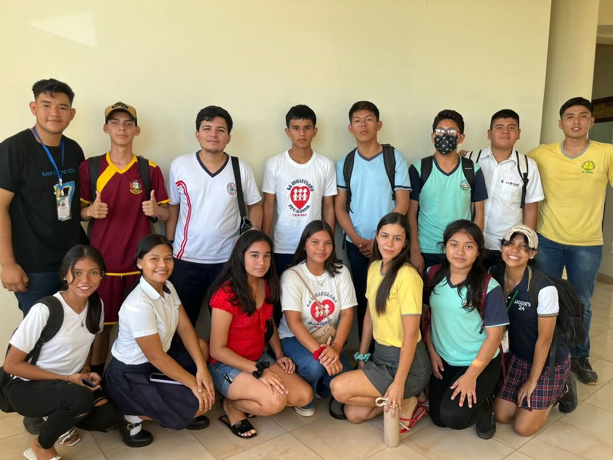
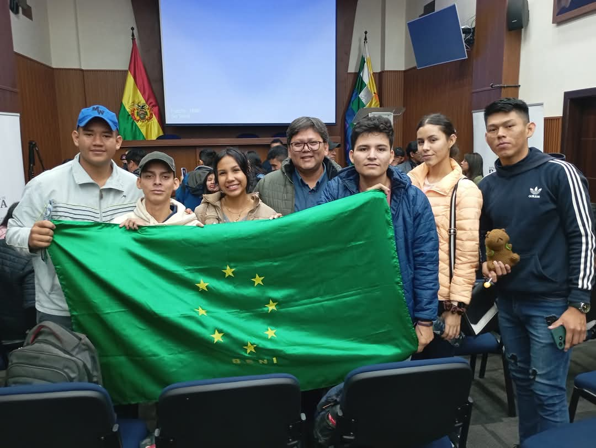
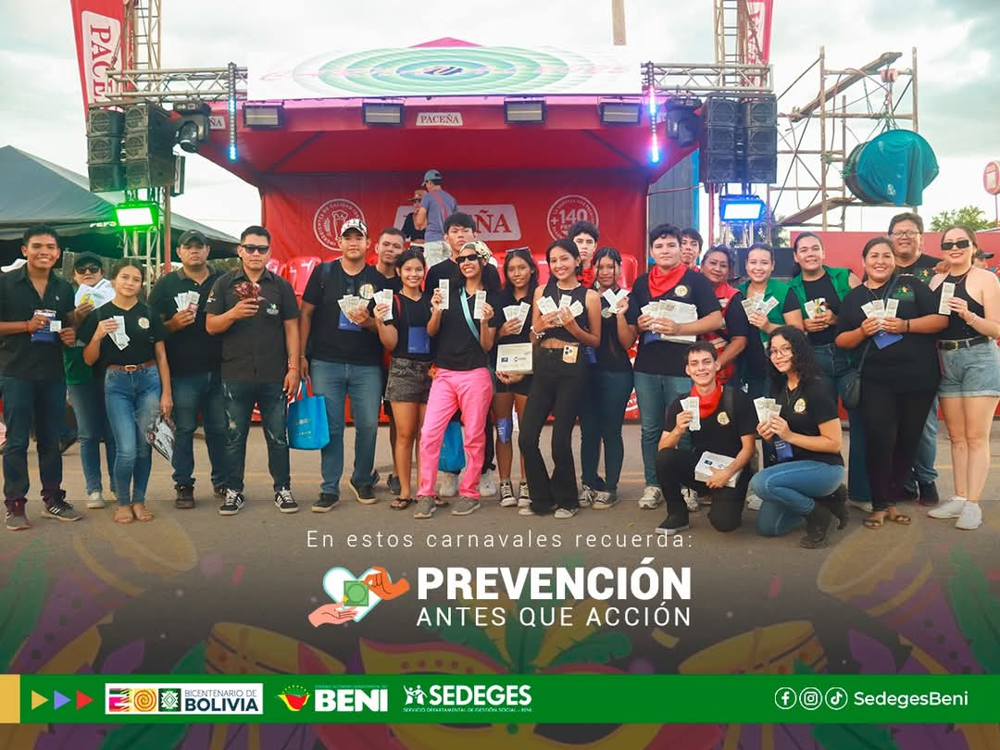
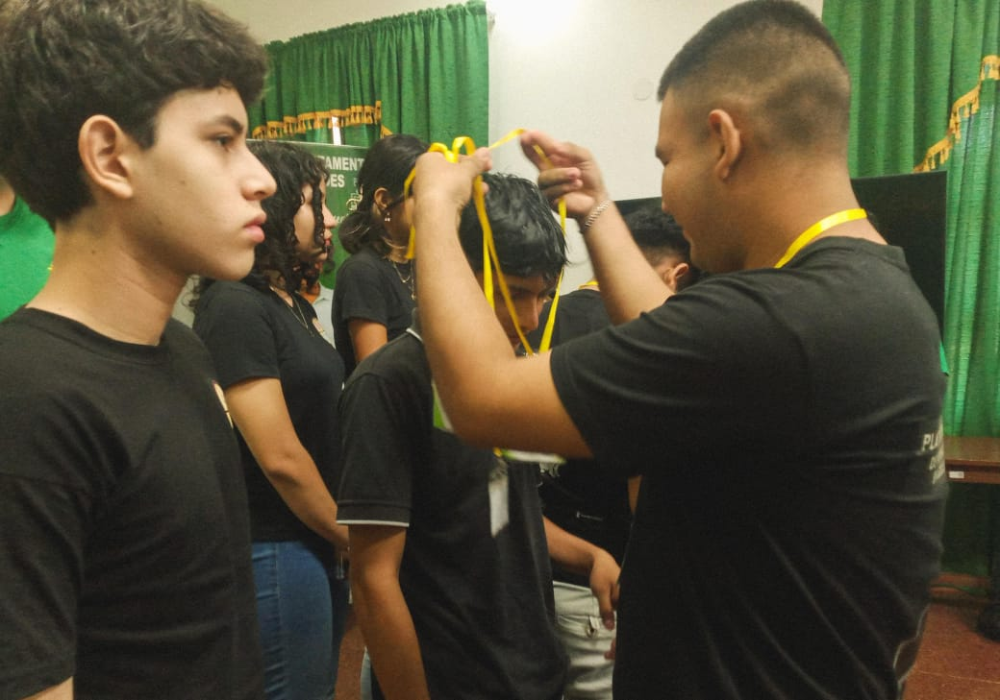
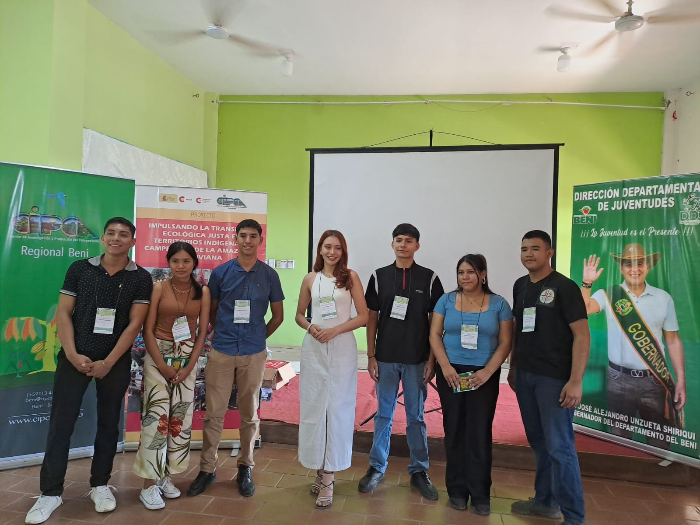
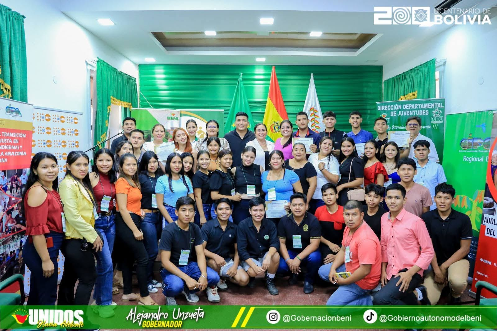

¿Qué es la Plataforma Departamental de Prevención de Embarazos en Adolescentes y Jóvenes del Beni?
La Plataforma Departamental de Prevención de Embarazos en Adolescentes y Jóvenes del Beni es una organización juvenil que tiene el propósito de reducir la tasa de embarazos adolescentes en el departamento del Beni, Bolivia.
A través de la educación, la sensibilización y el conocimiento acerca de los servicios de salud, la plataforma trabaja para empoderar a los jóvenes y brindarles las herramientas necesarias para tomar decisiones informadas sobre su salud sexual y reproductiva.
¿Quiénes somos?
La Plataforma Departamental de Prevención de Embarazos en Adolescentes y Jóvenes del Beni es una organización juvenil cuyo propósito es reducir el índice de embarazos en adolescentes y disminuir la tasa de VIH/SIDA, así como otras enfermedades de transmisión sexual. La plataforma está conformada por adolescentes y jóvenes del departamento del Beni, quienes trabajan de manera voluntaria y con el firme compromiso de generar un cambio positivo en la sociedad, colaborando con distintas instituciones y organizaciones para alcanzar sus objetivos.
¿Qué hacemos?
La Plataforma Departamental de Prevención de Embarazos en Adolescentes y Jóvenes del Beni trabaja en la promoción de la salud sexual y reproductiva, la prevención de embarazos no deseados y la reducción de la violencia de género. A través de talleres, charlas y actividades comunitarias, buscamos empoderar a los jóvenes para que tomen decisiones informadas sobre su salud.
Nuestra misión
La PDPEAJ-Beni tiene como misión colaborar en la reducción del embarazo adolescente en el departamento del Beni, promoviendo el ejercicio de los derechos sexuales y reproductivos de adolescentes y jóvenes a través de acciones de prevención, educación y sensibilización.
Nuestra visión
La PDPEAJ-Beni tiene como visión ser una plataforma reconocida en todo el departamento por su impacto en la promoción de la salud sexual y reproductiva y la prevención del embarazo en adolescentes y jóvenes, promoviendo el acceso a servicios de salud de calidad, empoderando a la juventud para que tome decisiones informadas sobre su salud, y consolidando una estructura juvenil que fortalezca la atención integral para este grupo poblacional.
¿Por qué es importante la prevención de embarazos en adolescentes y jóvenes?
La prevención de embarazos en adolescentes y jóvenes es fundamental para garantizar el bienestar y la salud de las futuras generaciones. Los embarazos no deseados pueden tener un impacto negativo en la vida de los jóvenes, afectando su educación, salud y oportunidades laborales. Además, la prevención de embarazos en adolescentes y jóvenes contribuye a la reducción de la pobreza y la desigualdad de género.
¿A quiénes nos dirigimos?
La Plataforma Departamental de Prevención de Embarazos en Adolescentes y Jóvenes del Beni se dirige a todos los adolescentes y jóvenes del departamento del Beni. Nuestro objetivo es llegar a todos los jóvenes, independientemente de su situación socioeconómica, para brindarles información y recursos sobre salud sexual y reproductiva.
¿Cómo se conforma la PDPEAJ-BENI?
La PDPEAJ-BENI se conforma por una mesa directiva y sus respectivos delegados (los delegados son aquellos miembros que no tienen un cargo específico, pero que participan activamente en las actividades de la plataforma.)
La mesa directiva está conformada por:
- Presidente
- Vicepresidenta
- Vicepresidente 2do
- Delegado a la Nacional
- Secretario de Actas
- Secretario de Alianzas
- Secretaria de Comunicación
- Secretario de Comunicación
- Vocal
- Vocal
Feria De Concientizacion Para La Prevención De Embarazos Adolescentes


Reestructuración

Plataforma Nacional


Corso Preventivo


Ciclo webinar

Presentación Oficial


Consejo Departamental de la Juventud


¿Cómo puedes ayudar?
Si deseas unirte a la Plataforma Departamental de Prevención de Embarazos en Adolescentes y Jóvenes del Beni, puedes ponerte en contacto con nosotros a través de nuestras redes sociales o nuestro sitio web.
También puedes ayudarnos a difundir nuestra misión y visión compartiendo nuestra información con tus amigos y familiares. Cuantas más personas conozcan nuestra plataforma, más impacto podremos tener en la prevención de embarazos en adolescentes y jóvenes.
Los adolescentes y jóvenes que quieran apoyar y ser participes de esta organización juvenil deben contar con los 15 años cumplidos y hasta un máximo de 23 años para poder ser uno de los miembros de la PDPEAJ-Beni
¿Cómo puedes contactarnos?
Si deseas obtener más información sobre la Plataforma Departamental de Prevención de Embarazos en Adolescentes y Jóvenes del Beni, puedes ponerte en contacto con nosotros a través de nuestras redes sociales, nuestros números telefónicos o escribiéndonos a nuestro correo electrónico.